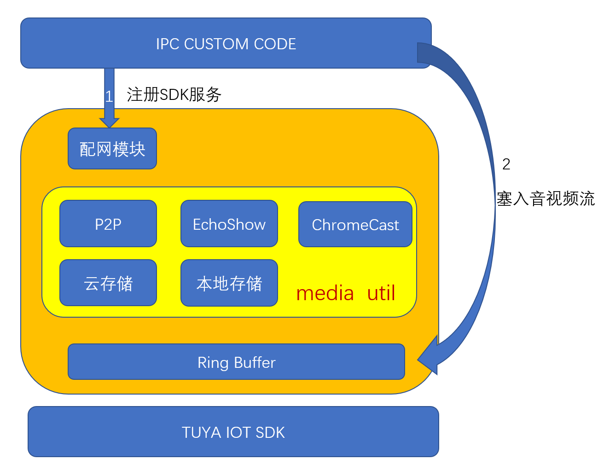
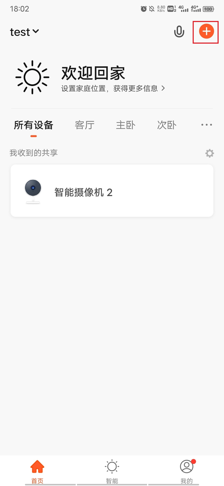
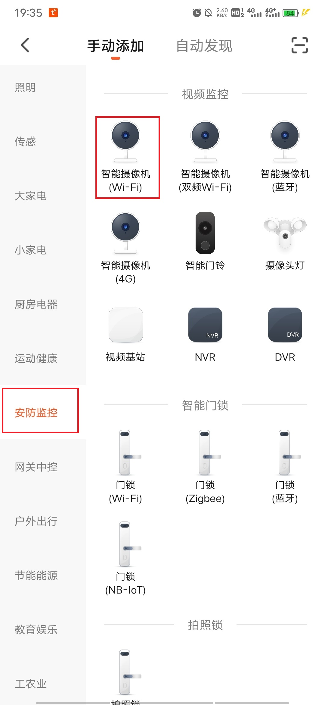
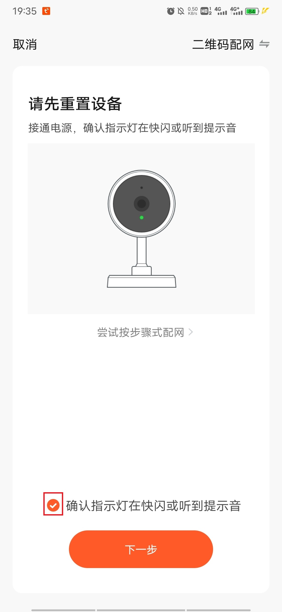
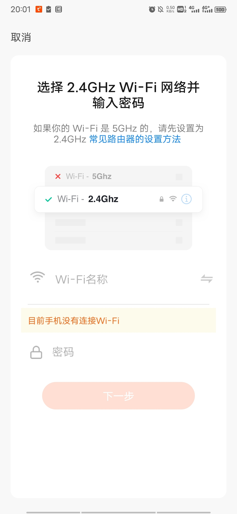
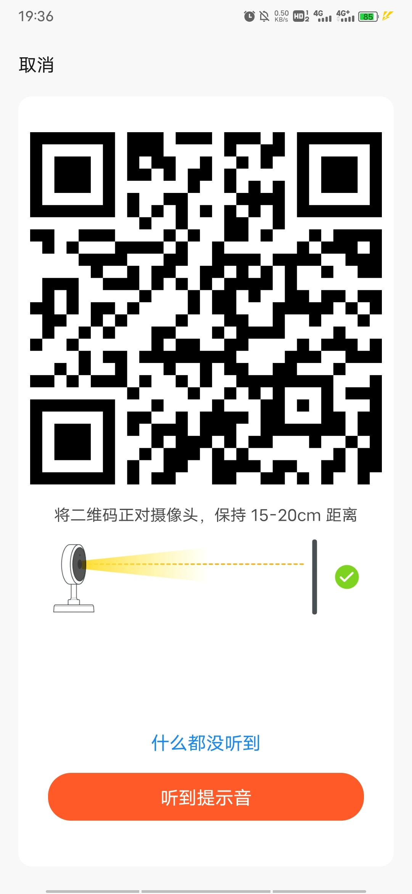
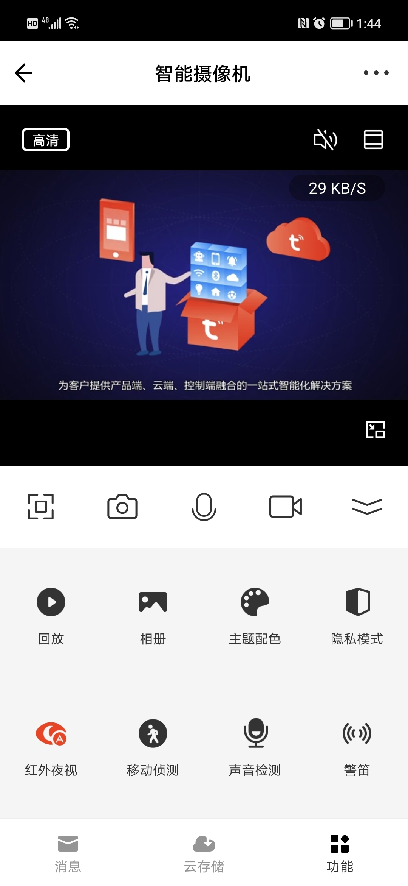
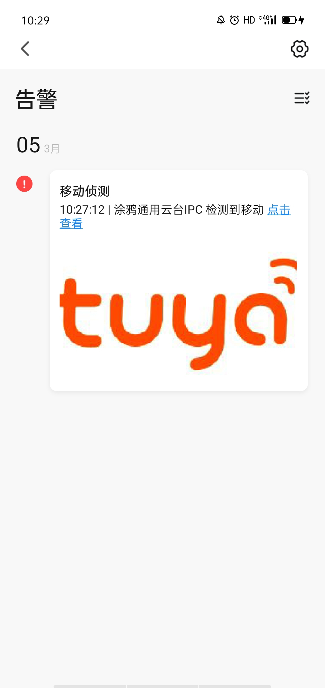

想快速的运用Tuya IPC SDK开发出属于自己的智能硬件产品吗？ 这个向导以能够通过APP拉流为指导，了解Tuya OS SDK的基本原理，并且利用Tuya IPC SDK快速进行开发。
了解Tuya ipc sdk架构以及基础能力。
如何通过APP来控制设备。
名词 | 释义 |
配网 | 建立设备端、手机 App、云端之间的通信链路 |
PID/Productkey | 即产品 ID（Product ID），用来标示某一类产品，同一种类型的 IPC 设备共享同一个产品 ID。PID 关联了产品具有的功能点 |
UUID | 即通用唯一识别码（Universally Unique Identifier），由一台机器上生成的数字，保证所有机器都具有唯一性 |
AUTHKEY | 设备的授权值，在 涂鸦 IoT 平台 上已注册能够使用云服务的服务码 |
P2P ID | 点对点服务ID，3.0.0版本以上SDK不需要填写P2P ID，云端自动进行分配 |
Token | 二维码配网过程中，由云服务器生成的标识码，10min有效期 |
DP | Date Point 设备与服务器数据交互的功能点 |
Chromecast | 谷歌电视棒或谷歌Home Hub 实时视频传输服务 |
Echo Show | 亚马逊音响实时视频传输服务 |
OTA | 设备在线升级功能 |
TKL | 驱动层代码 向下封装原厂提供的驱动和系统，不包含业务逻辑，只是面向芯片内部驱动 |
TAL | 抽象层代码 向下封装TKL接口，向上提供统一接口 |
├── adapter TKL适配层
│ ├── adc
│ ├── bluetooth
│ ├── cellular_catx
│ ├── display
│ ├── flash
│ ├── gpio
│ ├── hci
│ ├── i2c
│ ├── init
│ ├── media
│ ├── nb
│ ├── network
│ ├── pm
│ ├── pwm
│ ├── rtc
│ ├── spi
│ ├── storage
│ ├── system
│ ├── timer
│ ├── uart
│ ├── utilities
│ ├── watchdog
│ ├── wifi
│ ├── wired
│ └── zigbee
├── apps
│ └── tuyaos_demo_ipc tuyaos demo工程代码
├── build
│ └── tuya_iot.config IPC SDK功能配置，外部修改无效
├── build_app.sh 编译脚本
├── CHANGELOG.md
├── docs
├── include 头文件
├── base 基础头文件
└── components 功能组件中的头文件
├── base_img_proc 图像类处理
├── base_media 流媒体类的头文件
├── base_security 安全加密类接口
├── lib_cJSON JSON接口
├── mid_rtp rtp封包类接口
├── svc_api_ipc ipc对外提供接口，使用过程重点关注
├── svc_cloud_storage ipc云存储相关接口
├── svc_ipc_core ipc基础组件
├── svc_local_storage ipc本地存储相关接口
├── svc_ptz ipc摇头机功能相关接口
├── svc_ring_buffer ipc ringbuffer
├── svc_rpc rpc用于接口测试，业务不需要对接
├── svc_rtsp_server rtsp推流服务
├── svc_streaming_gateway 推流网关接口
├── svc_streaming_p2p p2p拉流接口
├── svc_video_msg 视频留言接口
├── svc_wired wired抽象接口
├── tal_compatible 适配层抽象接口
├── tal_driver 驱动抽象接口
├── tal_network 网络抽象接口
├── tal_system 系统抽象接口
├── tal_system_service 系统服务抽象
├── tal_wifi wifi抽象
└── tal_wired wire抽象
├── libs ipc sdk库文件
│ ├── libtuyaos.a
│ └── libtuyaos.a.stripped
├── LICENSE
├── README.md
└── tools
linux操作系统
要做完整个工作，我们需要完成以下几个步骤：
让我们愉快的开始吧。
在开始开发前，需要了解 SDK 的初始化流程。流程示意图如

首先需要进行SDK服务注册，注册操作通过SDK配网模块建立，服务通道建立成功，用户可以将设备的音视频信息按照格式要求送入SDK开辟的缓存中，至此用户无需关心后续的操作。可通过APP端进行操控设备。基于原始的的音视频数据，SDK结合手机端APP可以实现设备的存储功能、点对点传输服务以及其他的第三方接入功能（例如：EchoShow和ChromeCast接入功能）。
./build_app.sh apps/tuyaos_demo_ipc tuyaos_demo_ipc 1.0.0
编译后产物在apps/tuyaos_demo_ipc/output/tuyaos_demo_ipc_1.0.0/下
为启动sdk的基本业务，需要填写sdk所需要的基本参数，基本参数见tuya_device_cfg.json文件，如果不填写启动会存在问题。
{
"pid":"PID", //PID 信息
"uuid": "UUID", //UUID 信息
"authkey": "AUTHKEY", //Authkey信息
"storage": "./", //本地存储路径
"media_path": "./", //模拟的流媒体数据
"sd_path": "/tmp/", //sd卡路径
"upgrade_file": "/tmp/upgrade.file", //模拟升级文件
"app_version": "1.2.3" //固件版本
}





{"p":"test","s":"test","t":"AYYBJt2OGvY2w1"}:::info "t"后的参数即为Token，有效期：10分钟，10分钟后token失效，需要按照上述流程重新获取。 :::cd apps/tuyaos_demo_ipc
./output/tuyaos_demo_ipc_1.0.0/tuyaos_demo_ipc -m 2 -t "xxx" -p "xxx" -u "xxx" -a "xxx" -r "xxx"
参数说明
参数类型 | 参数意义 |
m | 配网模式的选择[1,2] 1为AP配网 2为debug配网 |
t | 授权码token参数 |
p | 运行pid |
u | 运行的设备uuid |
a | 运行的设备authkey信息 |
r | 运行过程中使用的resource资源路径 |
点击添加成功的设备即可成功的获取到视频流，如果没有视频显示，则表示之前的demo_resource文件没有设置正确，请检查-r参数是否设置正确。

在终端中输入下列指令可以模拟体验IPC功能：
指令 | 指令说明 |
start | 模拟移动侦测事件触发 |
stop | 模拟停止移动侦测事件 |
status | 获取设备激活状态 |
bell | 模拟门铃事件上报 |
例如虚拟设备执行过程中，执行：
#start
可以在消息中心产看得到一条移动侦测的上报。

通过上述步骤可以快速体验 IPC SDK功能。
在使用过程中，如果遇到问题，可以访问涂鸦开发者平台，按照自己遇到的问题分类，寻找合适的解决方法。